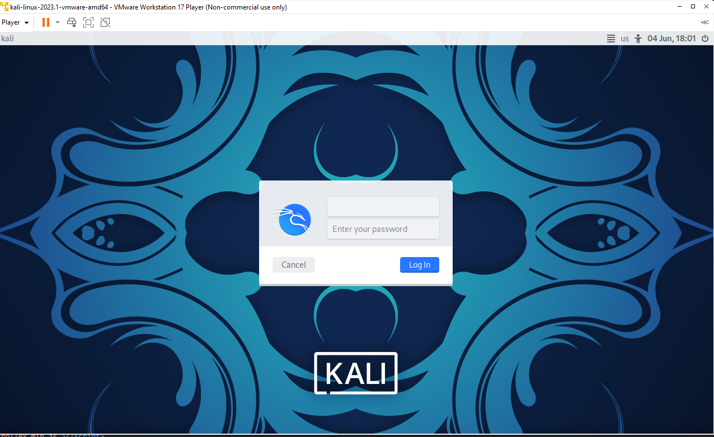
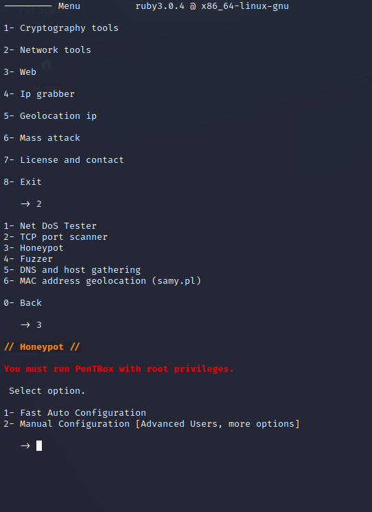

honeypot

First of all, i use VMware workstation to create the virtual box with Kali Linux, so we can easily make our test in a safe isolated space. Also, kali Linux comes with necessary tools like penetration test tool which is our topic right now

After that, I open the honey pot application. When I was doing this time i didnt have any importing errors that I had to solve them first. i enter the applications main page.

First, I select network tools by writing 2 on the user interface. then I had 6 different choices as you can see in the graph. I wrote 3 for select honey pot and enter the system to create a honey pot

First, I select manual configuration by writing 2 on the user interface for creating a honey port in a specific port. secondly, I enter 443 which is the port that we want to create and create a false message to show. further, I didn't save a log for intrusion and also didn't activate the beep sound notification. In the end, we start our program and wait for a minute. One minute later I get a notification that our system found an intrusion attempt which that was our goal and finish our assignment.
reflective part
my attempt was successful, I successfully created a honey pot and the attack was detected by the system. when I finished this assignment, I thought this was one of the most important things that we have ever done. if I do this again next time, I will open the beep sound notification, because I couldn't understand at first if that was successful and try to create a situation the attempt was failed to find attack.